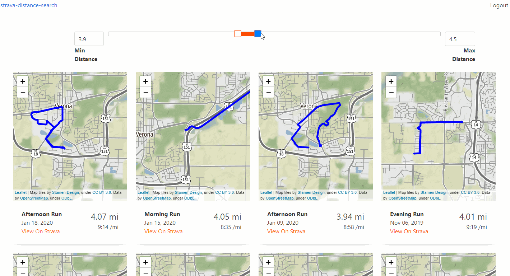

https://strava-distance-search.fly.dev/
I use Strava to track my running. Usually when I'm in the midst of a training plan I have a prescribed distance for each day. I have a few standbys from where I live for 3 mile, 5 mile, etc., distances but I tend to fall in a rut and repeat those over and over.
Variety is nice but so is having some familiarity with the route (lest I risk running farther than what was intended, or not knowing where the nearest bathroom is).
I wanted to search for routes of the given distance that I've run before. I couldn't find a way to do this in Strava's UI short of sorting all activities by distance and scrolling through the list.
Now you can specify a range of distances to view all your runs within that range:

Built with Django, React, Bulma, and Leaflet (with Stamen's free tiles), and hosted on Fly.io
Back to home